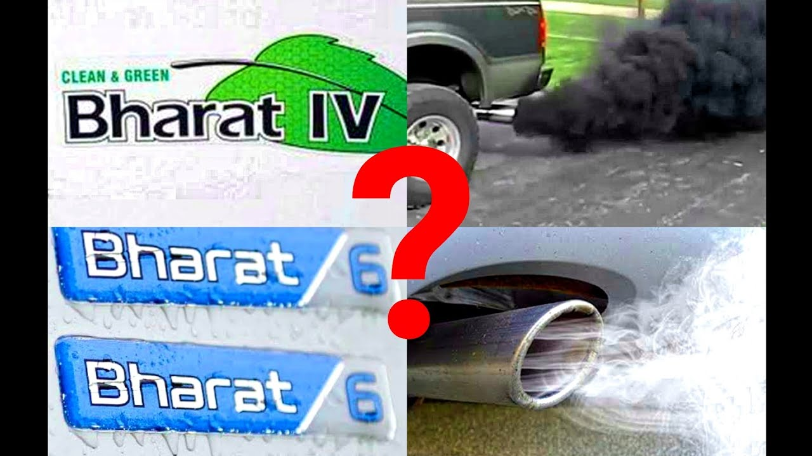

BS4
Sulphur content dropped by a whopping 50PPM in BS-IV norms. To ensure compliance with BS-IV, manufacturers equipped cars with bigger-sized catalytic converters. To ensure efficient combustion, they also tweaked the ECU. The new regulations also called for modifications in the exhaust and air intake systems.
The maximum Respirable suspended particulate matter discharge allowed was 0.025 and 0.18 g/km for Hydro Carbons+Nitrogen Oxide discharge.
